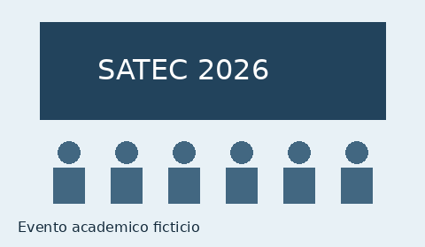

Oficina de HTML acessível
Atividade introdutória sobre estrutura semântica, títulos e navegação.
Consultar os horários do primeiro diaSATEC 2026 — Semana Acadêmica de Tecnologia
Projeto acadêmico: evento, participantes e condições de participação fictícios.
Três dias de palestras, oficinas e maratona de programação para estudantes e profissionais da área.
Programação fictícia de a .

A proposta fictícia da SATEC é aproximar estudantes e profissionais por meio de atividades sobre desenvolvimento, acessibilidade e inovação.
Consulte a programação completa e conheça os palestrantes fictícios .
Atividade introdutória sobre estrutura semântica, títulos e navegação.
Consultar os horários do primeiro diaDiscussão proposta sobre IA e o futuro do trabalho.
Consultar os horários do terceiro dia